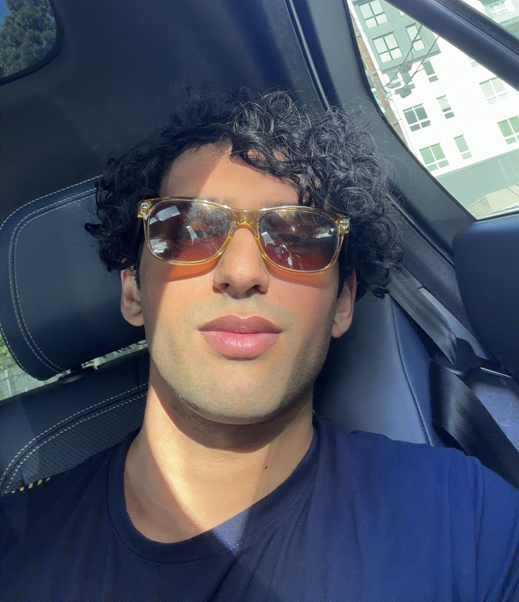

hey, i'm vanden.

⦿ generated 3.8M+ views across social platforms
⦿ 250k+ likes
⦿ creating content around college transfer advice and self improvement
⦿ my links: Instagram and TikTok
⦿ university of southern california (USC)
⦿ public relations & advertising major
⦿ focused on growth strategy, content creation, and GTM
⦿ prev. growth intern at Science Inc., the VC firm behind Liquid Death, Dollar Shave Club, and other consumer brands you love
⦿ worked on two new portfolio companies, including the #1 sour candy on TikTok Shop
⦿ generated 400k+ organic views, including 32k+ from a brand new account built from zero (@roguesnacks)
⦿ creating content and managing our UGC program
⦿ filming, editing, outreach, GTM
⦿ Ripple (backed by ex-CEO of Google)
⦿ GOLD - Daily Fashion Deals (created by the founder of Waymo)
⦿ increasing downloads, conducting user interviews, and identifying student pain points
⦿ launching and catering startup events on campus to build awareness and community